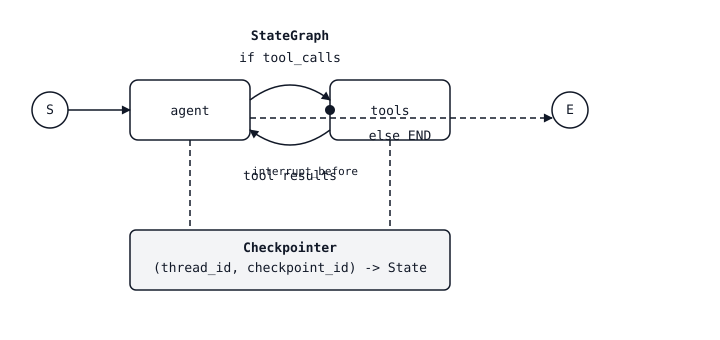

Agent State Machines — Graphs, Nodes, Checkpoints
A ReAct loop written by hand is a while True. The same loop written as an explicit graph is something you can checkpoint, interrupt, branch, and time-travel through. The agent hasn't changed. The harness around it has.
- Type
- Build
- Languages
- Python
- Prerequisites
- Phase 11 · 09 (Function Calling), Phase 11 · 14 (Model Context Protocol)
- Time
- ~75 minutes
#The Problem
You ship a function-calling agent. It works for three turns, then something goes wrong: the model tries a tool that returns 500, the user changes their mind mid-task, or the agent decides to refund an order without a human signing off. The while True: loop has no hooks. You can't pause it, you can't rewind it, and you can't branch off into "what if the model had picked the other tool." The moment you ship this past a demo, the agent becomes a black box that either worked or didn't.
The next step is obvious once you see it. The agent is already a state machine — system prompt plus message history plus pending tool calls plus the next action. Make the state machine explicit: nodes for "the model thinks," "a tool runs," "a human approves," and edges for the conditional transitions between them. Once the graph is explicit, the harness gets four things for free: checkpointing (save state between steps), interrupts (pause for a human), streaming (stream tokens and intermediate events), and time-travel (rewind to a prior state and try a different branch).
The reference implementation of this abstraction is LangGraph. It is not an agent framework in the LangChain sense ("here is an AgentExecutor, good luck"). It is a graph runtime with first-class state, first-class persistence, and first-class interrupts. The agent loop is something you draw, not something you hand-write.
#The Concept

A StateGraph has three things.
- State. A typed dict (TypedDict or Pydantic model) that flows through the graph. Every node receives the full state and returns a partial update, which LangGraph merges using a reducer per field —
operator.addfor lists that should accumulate, overwrite by default. - Nodes. Python functions
state -> partial_state. Each is a discrete step: "call the model," "run tools," "summarize." - Edges. Transitions between nodes. Static edges go one place. Conditional edges take a router function
state -> next_node_nameso the graph can branch on model output.
You compile the graph. Compile binds the topology, attaches a checkpointer (optional but essential for production), and returns a runnable. You invoke it with an initial state and a thread_id. Every step of execution persists a checkpoint keyed on (thread_id, checkpoint_id).
#The four superpowers
Checkpointing. Every node transition writes the new state to a store (in-memory for tests, Postgres/Redis/SQLite for prod). Resume by calling the graph again with the same thread_id. The graph picks up where it paused.
Interrupts. Mark a node with interrupt_before=["human_review"] and execution stops before that node runs. The state persists. Your API responds to the user with "awaiting approval." A later request to the same thread_id with Command(resume=...) resumes execution.
Streaming. graph.stream(state, mode="updates") yields state deltas as they happen. mode="messages" streams the LLM tokens inside model nodes. mode="values" yields full snapshots. You pick what to surface in your UI.
Time-travel. graph.get_state_history(thread_id) returns the full checkpoint log. Pass any prior checkpoint_id to graph.invoke and you fork from that point. Great for debugging ("what if the model had picked tool B instead?") and for regression tests that replay production traces.
#Reducers are the point
Every state field has a reducer. Most defaults are fine — a new value overwrites the old. But message lists need operator.add so new messages append instead of replacing. Parallel edges merge their updates through the reducer. If two nodes both update messages and you forgot the Annotated[list, add_messages], the second wins silently and you lose half the turn. The reducer is the only subtle thing in the library; get it right and the rest composes.
#The ReAct graph in four nodes
A production ReAct agent is four nodes and two edges:
agent— calls the LLM with the current message history. Returns the assistant message (which may contain tool_calls).tools— executes any tool_calls in the last assistant message, appends the tool results as tool messages.- A conditional edge from
agentthat routes totoolsif the last message has tool_calls, else toEND. - A static edge from
toolsback toagent.
That is it. You get the full ReAct loop (Thought → Action → Observation → Thought → …) with checkpointing, interrupts, and streaming, in roughly 40 lines of code.
#StateGraph vs Send (fanout)
Send(node_name, state) lets a node dispatch parallel subgraphs. Example: the agent decides to query three retrievers at once. Each Send spawns a parallel execution of the target node; their outputs merge through the state reducer. This is how LangGraph expresses the orchestrator-workers pattern without threading primitives.
#Subgraphs
A compiled graph can be a node in another graph. The outer graph sees a single node; the inner graph has its own state and its own checkpoints. This is how teams build supervisor-worker agents: the supervisor graph routes user intent to a per-domain worker subgraph.
#Build It
#Step 1: state and nodes
from typing import Annotated, TypedDict
from langchain_core.messages import AnyMessage, HumanMessage, AIMessage
from langgraph.graph import StateGraph, END
from langgraph.graph.message import add_messages
from langgraph.prebuilt import ToolNode
from langgraph.checkpoint.memory import MemorySaver
class State(TypedDict):
messages: Annotated[list[AnyMessage], add_messages]
def agent_node(state: State) -> dict:
response = llm.invoke(state["messages"])
return {"messages": [response]}
def should_continue(state: State) -> str:
last = state["messages"][-1]
return "tools" if getattr(last, "tool_calls", None) else END
tool_node = ToolNode(tools=[search_web, read_file])
graph = StateGraph(State)
graph.add_node("agent", agent_node)
graph.add_node("tools", tool_node)
graph.set_entry_point("agent")
graph.add_conditional_edges("agent", should_continue, {"tools": "tools", END: END})
graph.add_edge("tools", "agent")
app = graph.compile(checkpointer=MemorySaver())add_messages is the reducer that makes the message list accumulate instead of overwrite. Forgetting it is the most common LangGraph bug.
#Step 2: run with a thread
config = {"configurable": {"thread_id": "user-42"}}
for event in app.stream(
{"messages": [HumanMessage("find the Anthropic headquarters address")]},
config,
stream_mode="updates",
):
print(event)Every update is a dict {node_name: state_delta}. Your frontend can stream these to the UI so users see "agent is thinking… calling search_web… got result… answering."
#Step 3: add a human-in-the-loop interrupt
Mark a node so execution pauses before it runs.
app = graph.compile(
checkpointer=MemorySaver(),
interrupt_before=["tools"], # pause before every tool call
)
state = app.invoke({"messages": [HumanMessage("delete the production database")]}, config)
# state["__interrupt__"] is set. Inspect proposed tool calls.
# If approved:
from langgraph.types import Command
app.invoke(Command(resume=True), config)
# If denied: write a rejection message and resume
app.update_state(config, {"messages": [AIMessage("Blocked by human reviewer.")]})The state, the checkpoint, and the thread all persist across the interrupt. Nothing is in memory except during execution.
#Step 4: time-travel for debugging
history = list(app.get_state_history(config))
for snapshot in history:
print(snapshot.values["messages"][-1].content[:80], snapshot.config)
# Fork from a prior checkpoint
target = history[3].config # three steps back
for event in app.stream(None, target, stream_mode="values"):
pass # replay from that point forwardPassing None as the input replays from the given checkpoint; passing a value appends it as an update to that checkpoint's state before resuming. This is how you reproduce a bad agent run without re-running the whole conversation.
#Step 5: swap the checkpointer for production
from langgraph.checkpoint.postgres import PostgresSaver
with PostgresSaver.from_conn_string("postgresql://...") as checkpointer:
checkpointer.setup()
app = graph.compile(checkpointer=checkpointer)SQLite, Redis, and Postgres are shipped. MemorySaver is for tests. Anything that persists across restarts wants a real store.
#The Skill
You build agents as graphs, not as
while Trueloops.
Before you reach for LangGraph, do a 60-second design:
- Name the nodes. Every discrete decision or side-effecting action is a node. "Agent thinks," "tool runs," "reviewer approves," "response streams." If you can't list them, the task is not agent-shaped yet.
- Declare the state. Minimal TypedDict with a reducer for every list field. Do not stuff everything into
messages; hoist task-specific fields (a workingplan, abudgetcounter, aretrieved_docslist) to the top level. - Draw the edges. Static unless the next step depends on model output. Every conditional edge needs a router function with named branches.
- Choose a checkpointer up front.
MemorySaverfor tests, Postgres/Redis/SQLite for anything else. Do not ship without one — no checkpointer means no resume, no interrupt, no time-travel. - Decide interrupts before tools run, not after. Approvals go on the edge into a side-effecting node so you can cancel before harm; validation goes on the edge out of the model so you can reject bad calls cheaply.
- Stream by default.
mode="updates"for the UI,mode="messages"for token-level streaming inside model nodes,mode="values"for full snapshots during eval.
Refuse to ship a LangGraph agent that has no checkpointer. Refuse to ship one that interrupts after the side effect. Refuse to ship a messages field without add_messages as its reducer.
#Exercises
- Easy. Implement the four-node ReAct graph above with a calculator tool and a web-search tool. Verify that
list(app.get_state_history(config))returns at least four checkpoints for a two-turn conversation. - Medium. Add a
plannernode that runs beforeagentand writes a structuredplan: list[str]into state. Haveagentmark plan steps as done. Fail the test ifplanis lost across a checkpoint resume (wrong reducer). - Hard. Build a supervisor graph that routes between three subgraphs (
researcher,writer,reviewer) usingSend. Each subgraph has its own state and checkpointer. Add aninterrupt_before=["writer"]on the outer graph so a human can approve the research brief. Confirm that time-travel from a prior checkpoint re-runs only the forked branch.
#Key Terms
| Term | What people say | What it actually means |
|---|---|---|
| StateGraph | "The LangGraph graph" | The builder object you add nodes and edges to before compile. |
| Reducer | "How the field merges" | A function (old, new) -> merged applied when a node returns an update for that field; default is overwrite, add_messages appends. |
| Thread | "A conversation ID" | A thread_id string that scopes all checkpoints for one session. |
| Checkpoint | "A paused state" | A persisted snapshot of the full graph state after a node transition, keyed on (thread_id, checkpoint_id). |
| Interrupt | "Pause for a human" | interrupt_before / interrupt_after stop execution at a node boundary; resume with Command(resume=...). |
| Time-travel | "Fork from a prior step" | graph.invoke(None, config_with_old_checkpoint_id) replays from that checkpoint forward. |
| Send | "Parallel subgraph dispatch" | A constructor a node can return to spawn N parallel executions of a target node. |
| Subgraph | "A compiled graph as a node" | A compiled StateGraph used as a node in another graph; preserves its own state scope. |
#Further Reading
- LangGraph documentation — canonical reference for StateGraph, reducers, checkpointers, and interrupts.
- LangGraph concepts: state, reducers, checkpointers — the mental model this lesson uses, straight from the source.
- LangGraph Persistence and Checkpoints — the detail on Postgres/SQLite/Redis stores, checkpoint namespaces, and thread IDs.
- LangGraph Human-in-the-loop —
interrupt_before,interrupt_after,Command(resume=...), and the edit-state pattern. - Yao et al., "ReAct: Synergizing Reasoning and Acting in Language Models" (ICLR 2023) — the pattern every LangGraph agent implements; read it for the reasoning trace rationale.
- Anthropic — Building effective agents (Dec 2024) — which graph shapes (chain, router, orchestrator-workers, evaluator-optimizer) to prefer and when.
- Phase 11 · 09 (Function Calling) — the tool-call primitive every LangGraph agent node reuses.
- Phase 11 · 14 (Model Context Protocol) — external tool discovery that plugs into a LangGraph
ToolNodevia the MCP adapter. - Phase 11 · 17 (Agent framework tradeoffs) — when to pick LangGraph over CrewAI, AutoGen, or Agno.
Nice. That's 8 minutes of LLM Engineering behind you.
Continue to Agent Framework Tradeoffs — Graph, Role, and Actor Orchestration →